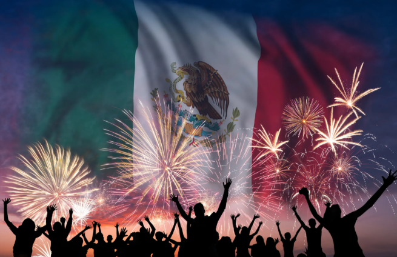
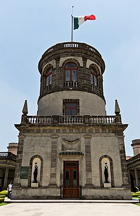
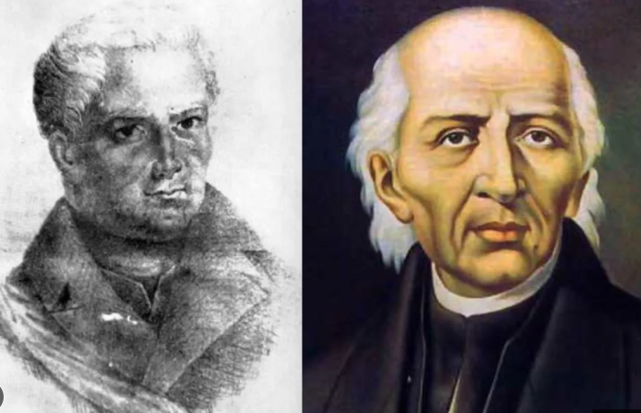

Septiembre no es solo un mes en el calendario; es la época en la que las calles se tiñen de verde, blanco y rojo, el aire se llena del aroma a gastronomía tradicional y el orgullo de ser mexicanos resuena en cada rincón. Durante estas semanas conmemoramos el camino, las luchas y las alianzas que dieron origen a nuestra nación libre y soberana. Sin embargo, detrás de las celebraciones y los fuegos artificiales, existen historias fascinantes, héroes legendarios y detalles que a menudo la historia oficial suele pasar por alto.

En septiembre, todo se viste de: verde, blanco y rojo
¡Es como una gran fiesta que dura todo el mes!
Verde: La esperanza del pueblo en el futuro de la nación y en sus aspiraciones.
Blanco: La unidad de todos los mexicanos y la pureza de los ideales patrios.
Rojo: La sangre derramada por los héroes nacionales que lucharon por la libertad e independencia de México.
Defensa del Castillo de Chapultepec
Una de las cosas más conmovedoras es el 13 de septiembre, cuando recordamos la Defensa del Castillo de Chapultepec y a los Niños Héroes.

El 13 de septiembre de 1847, durante la invasión estadounidense, el Castillo de Chapultepec -que entonces funcionaba como el Colegio Militar- fue el último bastión de resistencia de la Ciudad de México. Frente al avance de un ejército superior en número y armamento, un grupo de jóvenes cadetes decidió no abandonar su puesto y defender la patria hasta el último aliento.
En la batalla no hubo una victoria militar para México, ya que las tropas estadounidenses terminaron tomando el Castillo. Sin embargo, la historia los reconoce como ganadores en honor, valentía y memoria nacional por defender la patria hasta el final.
Los Niños Héroes:
Juan Escutia: Recordado por la tradición popular por haber protegido el pabellón nacional para evitar que cayera en manos enemigas.
Vicente Suárez: Con solo 14 años, fue el más joven del grupo y combatió cuerpo a cuerpo en la guardia del castillo.
Fernando Montes de Oca: Murió defendiendo la puerta de la Comandancia mientras intentaba apoyar a sus compañeros.
Francisco Márquez: A sus 13 años, rechazó rendirse y continuó disparando hasta el último momento.
Agustín Melgar: Defendió con firmeza la sala de armas del colegio, resultando gravemente herido durante el combate.
Juan de la Barrera: El de mayor edad (19 años) y teniente de ingenieros, quien dirigió la defensa de las trincheras en la base del cerro.
Acontecimientos más relevantes del Mes Patrio
16 de septiembre de 1810 (Inicios de la Guerra): El cura Miguel Hidalgo y Costilla convoca al pueblo de Dolores, Guanajuato, a levantarse en armas contra el dominio español.
13 de septiembre de 1847: Defensa del Castillo de Chapultepec.
15 de septiembre (Noche): Ceremonia Conmemorativa del Grito. El Presidente de la República (así como gobernadores y alcaldes) encabeza desde el Palacio Nacional el tradicional Grito de Independencia.
16 de septiembre (Mañana): Desfile Militar Conmemorativo de las Fuerzas Armadas y la Guardia Nacional en el Zócalo de la Ciudad de México.
27 de septiembre de 1821 (Consumación): El Ejército Trigarante, encabezado por Agustín de Iturbide y Vicente Guerrero, entra triunfante a la Ciudad de México tras 11 años.
28 de septiembre de 1821: Firma del Acta de Independencia del Imperio Mexicano, documento que formaliza legalmente el nacimiento del nuevo Estado soberano.
Personajes Ilustres

Ignacio Allende: Amigo de Hidalgo, fue muy importante en la lucha por la independencia. Era un experto en estrategias militares y ayudó a planear cómo luchar contra los españoles. Su valentía y organización fueron claves para el movimiento.
Josefa Ortiz de Domínguez: También conocida como “La Corregidora", fue una gran ayudante en los primeros días de la lucha. Ella organizó y apoyó a los insurgentes, manteniendo viva la causa de la independencia con su valentía y esfuerzo.
José María Morelos: Después de la muerte de Hidalgo y Allende, tomó el liderazgo en 1811. Fue un gran líder que luchó en muchas batallas y escribió documentos importantes para el futuro de México.
Vicente Guerrero: Valiente luchador que continuó la lucha después de la muerte de Morelos. Ayudó a luchar contra los españoles y, en 1821, fue clave para lograr la independencia de México.
Datos Curiosos
La bandera no siempre tuvo el águila de frente: A lo largo de la historia, el Escudo Nacional ha cambiado varias veces. El diseño actual, con el águila de perfil posada sobre un nopal devorando una serpiente, se oficializó en 1968 para coincidir con los Juegos Olímpicos de México.
El grito original no fue a medianoche: Miguel Hidalgo no dio el Grito la noche del 15 de septiembre, sino alrededor de las 5:00 de la mañana del 16. La fiesta comenzó a celebrarse la noche del 15 desde la época de Porfirio Díaz, quien compartía esa fecha con su cumpleaños.
Hidalgo no usó la bandera actual: El estandarte que tomó el cura Hidalgo de la parroquia de Atotonilco para iniciar la rebelión no tenía los colores verde, blanco y rojo; era una imagen de la Virgen de Guadalupe.
Mitos
El mito de "El Pípila": Se cree que Juan José de los Reyes Martínez cargó una enorme losa de piedra en la espalda para cubrirse de las balas y quemar la puerta de la Alhóndiga de Granaditas, pero en realidad se trata de un personaje idealizado que simboliza el esfuerzo colectivo y la valentía de decenas de mineros guanajuatenses, ya que realizar esa hazaña en soledad era físicamente imposible.
El mito de los Niños Héroes: Con los años surgió la versión falsa de que los cadetes del Castillo de Chapultepec estaban ebrios, castigados o atrapados por error durante el ataque estadounidense, cuando en realidad las actas militares confirman que recibieron la orden de evacuar dada la inferioridad numérica y decidieron quedarse a defender el Colegio Militar por convicción propia.
"Honrar nuestro pasado es la mejor manera de construir el futuro que soñamos; que el orgullo de nuestras raíces nos acompañe siempre. ¡Gracias por explorar la historia con nosotros y hasta la próxima!"